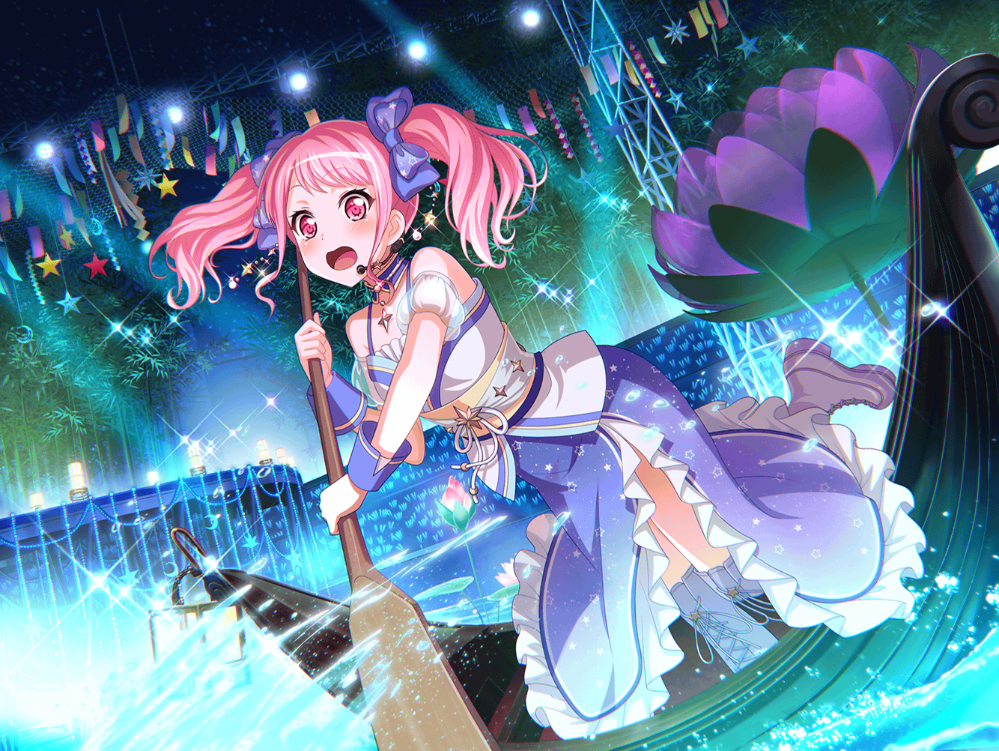

ファーストフード店
彩
いらっしゃいま……あ、{{userName}}さん！
こんにちは～！
彩
あの、今って忙しいですか？
私、もうそろそろバイトが終わるんです。
実はちょっと聞きたいことがあって……
彩
本当ですか！？ わ～い、うれしい！
じゃあ、着替えてくるんで、
ちょっとお待ちくださ～い！

商店街
彩
お待たせしました！
えっと、じゃあ、場所を移動しましょう
彩
羽沢珈琲店でいいですか？
彩
よかった。
じゃあ、行きましょう！

羽沢珈琲店
彩
今日は付き合ってくれてありがとうございます！
彩
それで、聞きたいことなんですけど、
紗夜ちゃんのことで、少し気になることがありまして……
彩
{{userName}}さんって、
この間の七夕祭り行きました？
彩
私、あの日バイトだったんです。
七夕祭りのおかげで、
すごくお店が混んでて……
彩
その時、日菜ちゃんと紗夜ちゃんが別々でお店に来たんです
彩
紗夜ちゃんに日菜ちゃんが七夕祭りに行きたがってたよって
話をしたら、なんていうか、こう……紗夜ちゃんが
思い悩むような表情をして……
彩
紗夜ちゃんのあんな表情はじめて見たっていうか……
彩
その……日菜ちゃんも、紗夜ちゃんの話をする時、
少しさみしそうな顔をするんです
彩
二人の間に何があったのか、私は詳しく知らないんですけど……
{{userName}}さんは、知ってますか？
彩
……はぁ、そうですか。
知らなかったか～
彩
私も何か、二人の力になれたらなあって思ったんですけど……
私、おせっかいかなあ……
彩
……あ、でも、このあいだの練習では日菜ちゃん
すごくニコニコしててごきげんだったんです
彩
そういえば、楽しそうに七夕祭りの話もしてくれました
彩
おねーちゃんとお祭りを見てまわれたんだって
ニコニコしながら教えてくれて……
彩
今まで、紗夜ちゃんの話なんて
ほとんどしなかったのに……
彩
あ、もしかしたら……
七夕祭りで何かあったのかもしれませんね
彩
何か、聞いてないですか？
彩
……聞いてないですか～
彩
まあ、でも、日菜ちゃんが紗夜ちゃんのことを
うれしそうに話してくれるだけで、
すごく楽しい気分になれるから、心配いりませんね！
彩
それに、仲のいい姉妹の話ってほっこりするっていうか
彩
私にも年の離れた妹がいるから、
日菜ちゃんの気持ちわかるなって
彩
私も妹と遊びに行った時とか
すっごく楽しいし
彩
いつだったかな、妹と映画に行ったんですよ。
終わった後、カフェで感想言い合って……
彩
姉妹だから観点が似てるんですよね。
だから、すっごく盛り上がっちゃって！
彩
日菜ちゃんと紗夜ちゃんも、
七夕祭りの時に、そういうことをしたのかな……？
彩
姉妹って、友達とは違う……
でも、友達以上の特別な存在なんです
彩
うちは年が離れてるから、
日菜ちゃんと紗夜ちゃんの関係とはまた違うけど、
でも、姉妹には変わりないですもんね
彩
ただ、たまに思うんですよね。
妹にとって私ってどんな姉なのかなって
彩
ちゃんと、いい姉でいられてるのかな……って
彩
バンド活動が忙しくなって、
妹との時間が減っちゃったんです
彩
私、バイトもしてるし……
彩
妹は、そんな私のことを
どう思ってるのかなって……
彩
でも、妹は私がバイトを終えて家に帰れば、
そんな不安を吹き飛ばすぐらいの笑顔で出迎えてくれます
彩
ふふ、それが本当にうれしくて、
これからも、仲のいい姉妹でいたいな～って思うんです
彩
だって、姉妹が仲良しなのはいいことですもんね
彩
……なんだかすみません、私が心配しなくても
日菜ちゃんと紗夜ちゃん、うまくいってそうですね
彩
{{userName}}さんにも時間をとってもらって、
話を聞いてもらったのに……
彩
私が友達思いだって？ えへへ……そんな風に言ってもらえると
嬉しいです♪
彩
よかったら、またお話聞いてください♪
私の大切な友達の話や……私自身のことも！